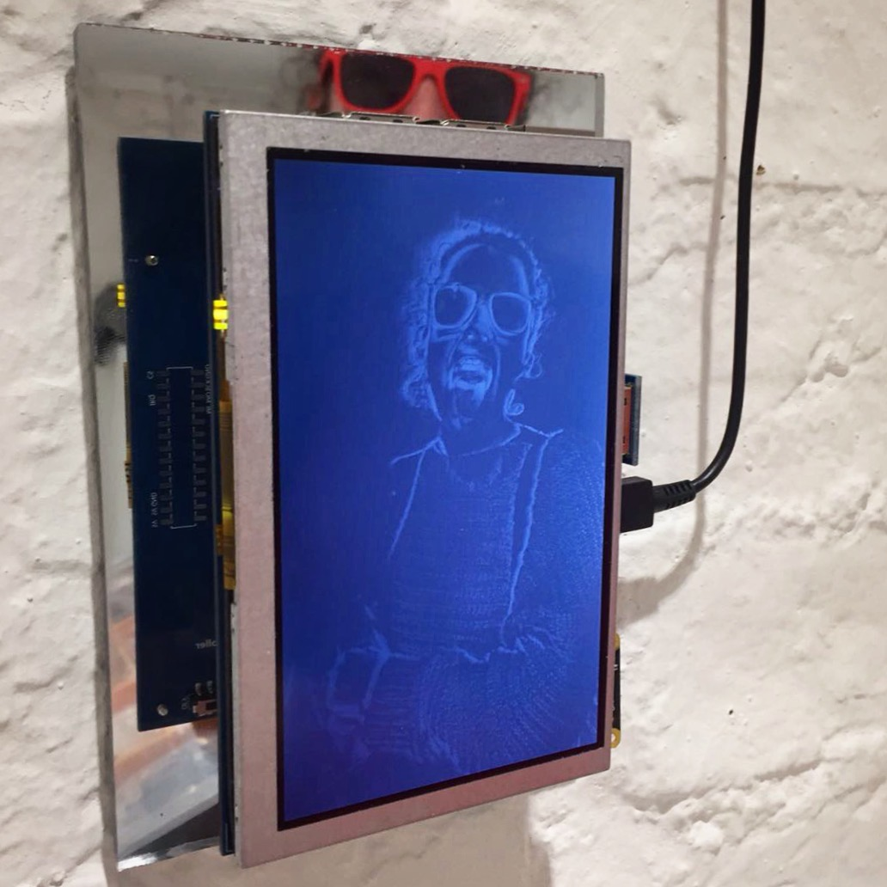

McLuhan wrote: “We look at the present through a rear view mirror. We march backwards into the future.” He accurately described the way in which emerging media recapitulates existing forms, but did not accommodate for an understanding of media as being composed of multiple parts and connections, rather than a whole form. The title of this exhibition, “Mirror Mirror”, instead recalls Deleuze’s circuits of exchange. When two facing mirrors reflect an object, virtual images proliferate, spreading like a network through space.
Deleuze used the mirror to seek an understanding of time and memory. Following Bergson, he writes that memory does not chronologically follow perception in the present but is contemporaneous with it: “the present is the actual image, and its contemporaneous past is the virtual image, the image in the mirror” (Deleuze, 1985). Quoting from Bergson's Mind-Energy, he wrote: “Every moment of our life presents the two aspects, it is actual and virtual, perception on the one side and recollection on the other”.
This understanding of memory contradicts the typical reading of technical machines as a receptacle for human memory. We position the video camera as a substitute for the human eye: it transforms visual perception into recorded images, while the computer stores this information into databases functioning as an archive of the past. This formulation treats memory as a static recording of the past. Rather, memories are an emotional construction of the present, and an archive does not simply store the past, but is a “pledge to the future” (Derrida, 1995).

Memory and the archive are fundamental to the negotiation and exercise of power. In contemporary society, power is personalised. Each person owns their own body as “human capital”, which can be exchanged through the market that stands in for the principle, form and model for the state. In this society, all human interactions are economic transactions.
Computers, of course, are key to creating the empowered and productive individual. They allow the individual to know and to act, to navigate the complexities of the world and to be tracked and quantified in turn. However, Wendy Hui Kyong Chun argues that computers are not simply a tool of neoliberalism, but also the medium through which we might pleasurably create alternative visions. We can achieve this by fostering a network of relations through the “acting without knowing” on which freedom depends.